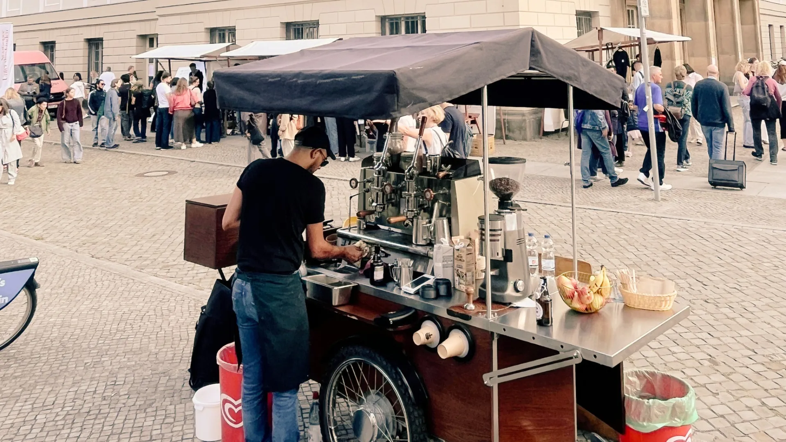
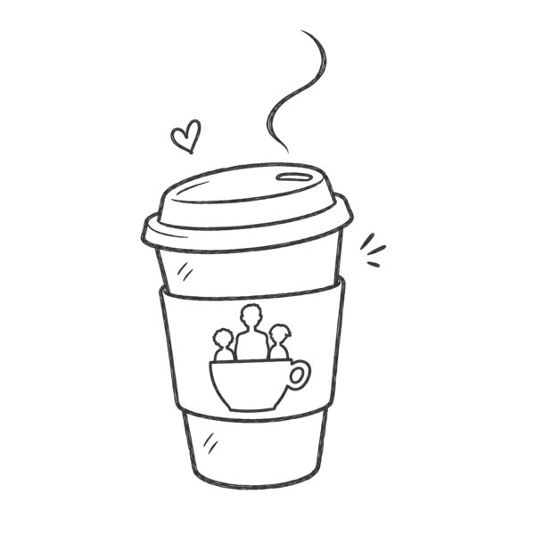

Lorch & Söhne auf dem Fahrrad.

Unseren guten Kaffee gibt es auch vom Kaffeefahrrad. Mit frisch gemahlenen Bohnen von Passenger Coffee und einer professionellen Espressomaschine bereiten unsere Baristas die Kaffeespezialitäten direkt vor Ort zu.
Eine kleine Espressobar auf Rädern, die dorthin kommt, wo du sie brauchst.
Kaffeefahrrad anfragenLorch & Söhne · Kaffeefahrrad
Unsere Kaffeekarte

Frisch zubereitet vor Ort
Espresso, Americano, Cappuccino, Flat White, Latte Macchiato, Matcha Latte und weitere Kaffeespezialitäten.
Dazu Milchalternativen nach Absprache.
Das genaue Getränkeangebot und die möglichen Extras stimmen wir für die Veranstaltung ab.

Wie funktioniert's?
Schreib uns, was du vorhast, wann und wo die Veranstaltung stattfindet und mit wie vielen Gästen du ungefähr rechnest.
Wir melden uns bei dir und besprechen die Möglichkeiten.
Kaffeefahrrad anfragenKaffeefahrrad anfragen
Du planst eine Veranstaltung? Schreib uns ein paar Zeilen.

Schreib uns, wann und wo deine Veranstaltung stattfindet und mit wie vielen Gästen du ungefähr rechnest. Wir melden uns bei dir.